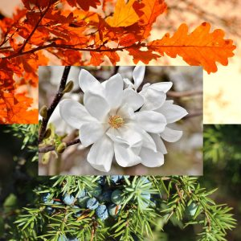

The number of varieties of trees is extensive. In New Jersey alone, you can find about 80 different species of trees. It can be difficult to know what trees are best for certain situations. Certain species of trees are better for providing shade while others are purely for beauty’s sake. If you live in southern Jersey, one of the best people for advice on these decisions is a tree company in Ocean County, like us! When it comes to knowledge of trees, there is no one better to talk to. Even though many services a tree company provides are more in line with trimming and tree removal, it is essential to know about tree species in order to do those jobs properly. Just as all flowers have sun and water preferences, trees do too. In order to care for them correctly, you must know all about them.

Know Your Zone
Before you even begin to research trees, you need to know your zone. Specifically, your Plant Hardiness Zone. This map helps gardeners to find plants best suited for their environment. Most of Ocean County is in Zone 7. Zones are determined by average winter temperature and are divided by ten degrees. The higher the zone, the warmer the average soil temperature. The growing season for plants is about 7 months and goes from April through October. This medium-length growing season allows for a large variety of trees and plants to succeed in this area.
If you live in zone 7, the best time to plant trees and shrubs is in the late fall to early winter months. Consider planting in October, November, and December. This is because planting trees at this time of year allows the tree to absorb nutrients all winter long to ensure a healthy growing season in spring.
Tree Company in Ocean County Recommends White Oak for Shade
For one of the best shade trees, select a White Oak. There are many varieties of oak, but tree companies usually recommend the White Oak because it is less susceptible to wilt than other species. The limbs spread out horizontally making a nice large canopy with a rounded crown. The leaves of the White Oak are a dark green to blueish green in the summer changing to gorgeous shades of red, orange, and brown in the fall. While this tree can tolerate some shade, it thrives in full sun and has a slow-medium growth rate. Perfect for providing assistance in controlling extreme temperatures in summer by shading a homemaking it feel up to 10°F cooler, the mature size of this tree is 50-80’ tall and wide. These trees can survive for centuries and moving a mature oak can be difficult due to their strong, deep taproot.
For Fragrance Select the Sweetbay Magnolia Says Tree Company in Ocean County
When it comes to adding beauty and fragrance to your zone 7 yard, the Sweetbay Magnolia is the tree for you. The leaves of the Sweetbay Magnolia are a deep green on top but show off a silvery underside when the leaves wave in the wind. These trees grow best in full sun and can reach sizes of 10-20 feet high and wide in a column shape. In late spring, creamy white flowers bloom releasing a lovely lemon scent. These sweet trees also produce bright red berries that attract wildlife like towhees, flickers, and vireo birds. If you prefer red or pink leaves, don’t worry because there is an array of magnolia trees that flourish in Ocean County, NJ including the Jane Magnolia and the Ann Magnolia.
For Windy Properties Use These Trees
Just as a mature oak can help cool your home in the summer, there are certain species of trees that can be used to help protect your home from chilling wind. Trees planted in a row in an area that help to reduce the effect of wind on a home or structure is known as a windbreak. One tree that works well for this according to this tree company in Ocean County is the Eastern Redcedar. Despite its name, this tree is not in the cedar family, but is actually a juniper. These evergreens provide a light scent and grows grayish-blue fruit. These resemble berries, but just as its name, these are misleading as well. These fruits are actually collections of cone scales that fuse together to form the “berry.” They are perfect for many areas due to their ability to tolerate salt, heat, and other adverse settings.
Don’t Know Which Tree to Plant? Ask Us, Your Neighborhood Tree Company in Ocean County!
When you need a tree to fulfill a specific need on your property and don’t know which tree to select, speaking with people in the tree industry will be your best source of information. Contact us today if you have questions about trees on your property or about trees you want to plant on your property.